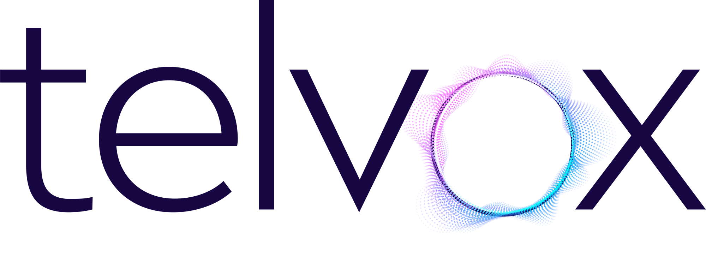

Appointments, insurance questions and reminders, answered instantly.
Inquiries screened and consultations booked in English, automatically.
The same booking flow, answered natively in Nepali.
Account questions and transaction support, handled in Nepali.
Balance checks and service requests, answered in Nepali.
Balance checks and service requests, answered around the clock.
Quick answers on permits and services, no hold time.
Telvox learns your workflow and handles customer conversations.
Built for every industry

Voice AI Platform